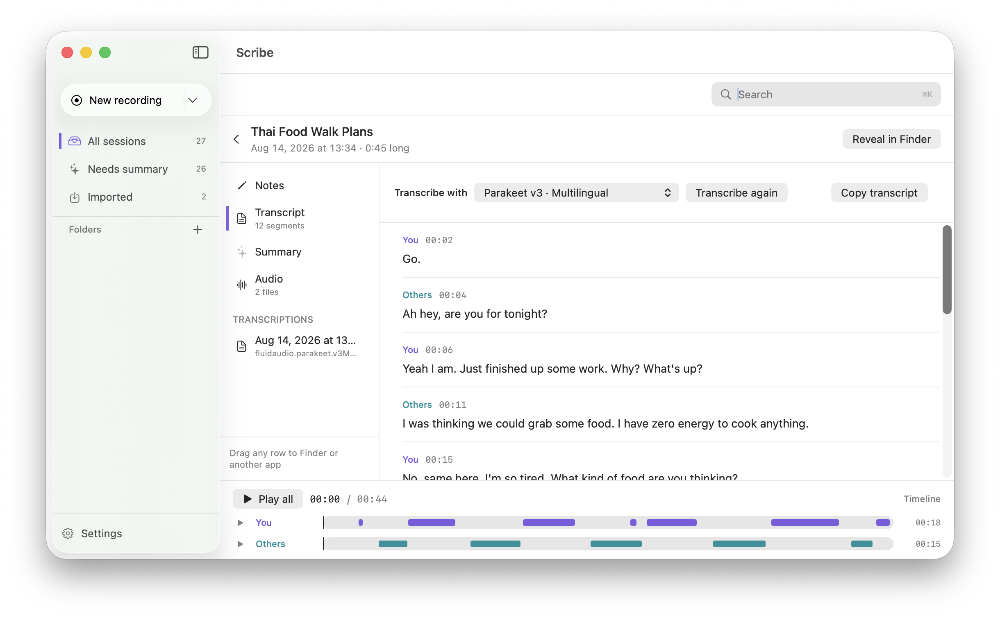

days from written scope through build and verification.
Personal project · Product direction · 2026
Scribe
A Mac app that records meetings and transcribes them on the machine. Nothing is uploaded, the files remain ordinary files, and every claim of “done” had to survive a manual check.

- Timeframe
- 13 days
- Platform
- macOS
- My role
- Specification, product decisions, acceptance and verification
- Method
- Build assisted by AI with manual review
01 / Overview
Private by architecture, not by promise.
Meeting tools often make privacy a setting. I made it the product boundary: recording and transcription happen locally, and a session remains readable even if Scribe disappears.
The work began with the operating model rather than the interface. I wrote what the app would do, what it would refuse to do, and what observable evidence would count as complete. Build agents worked against that definition; I owned the decisions and checked the result.
automated tests were passing by the end of the build.
defects still survived and were found through human verification.
The tests could say “pass.” Only a person could say whether the meeting had actually been captured.
02 / Role
I directed the build. I did not write the code.
My contribution was the product system around the implementation: scope, acceptance criteria, constraints, agent direction, competing priorities and final verification.
What I owned
- Defining the user promise and local processing boundary
- Writing the specification and acceptance criteria
- Comparing twelve transcription model options
- Directing build and review agents against the scope
- Testing the actual files, audio and transcripts by hand
What the agents owned
- Implementation against the written specification
- Automated test creation and execution
- Code review and correction loops
- Reporting progress and unresolved issues for a decision
This distinction matters. The case study is not evidence that I became a macOS engineer in thirteen days. It is evidence that I can define a product precisely enough to direct technical work, interrogate its output and decide what is safe to call finished.
03 / Process
Define “done” before asking for a build.
The workflow separated generation from judgment. An agent could produce an implementation; it could not move the boundary of the product or decide whether its own output was acceptable.
Write the contract
I translated the idea into behaviours, exclusions and observable acceptance criteria before implementation began.
Build against it
Agents worked inside that contract, with review loops tied to the agreed scope instead of a feature list without boundaries.
Touch the evidence
I recorded thirty seconds, opened the session folder, played the audio and checked what had actually been written to disk.

The live state makes recording status and elapsed time explicit.
04 / Findings
Passing tests were necessary. They were not proof.
Four defects survived 283 passing tests. The clearest one was also the most instructive: a transcript appeared correctly on screen but was never written to disk.
The interface could signal success without durable output
A visible transcript looked complete. Opening the session folder exposed that the product had not preserved it.
Automated coverage and user reality were different things
The suite validated code paths. It could not listen to the recording, judge the transcript or confirm that a person could recover the files.
Manual verification needed a repeatable script
Record, open, play, inspect, read the byte count. Concrete checks made “it seems to work” much harder to accept.
UI success
What the interface claimed had happened.
Filesystem state
What the product had actually preserved.
Human review
The step that reconciled the two.
05 / Design
Make the constraint legible.
Local transcription means waiting. The first text can take around sixteen seconds to appear, so the interface explains the pause rather than disguising it as instant.

The reading view keeps the transcript as the primary object rather than decorating it with secondary features.
During the meeting
The design communicates recording and processing states plainly. A known delay becomes an expectation the user can understand.
After the meeting
Sessions live as ordinary folders, so audio and text are not trapped inside the application.

The library is a way into the files, not a replacement for owning them.
06 / Refusals
The most important features are the ones I left out.
Each refusal reinforced the same product position: recording a meeting should not quietly create a second data product.
Local transcription
Meeting audio and transcript data are not uploaded for processing.
No stored voiceprints
The app does not retain biometric voice profiles to make speaker recognition more convenient.
No automatic calendar start
A calendar event cannot begin recording without the person making an explicit choice.

Consent is part of the flow, not a line hidden in settings.
07 / Outcome
A product and a stricter way of working.
Thirteen days produced a Mac app that processes data locally, but the more durable result was the review discipline: specifications constrain the build; automated checks reveal one class of failure; people still need to verify the outcome that matters.
Next projectRadio →